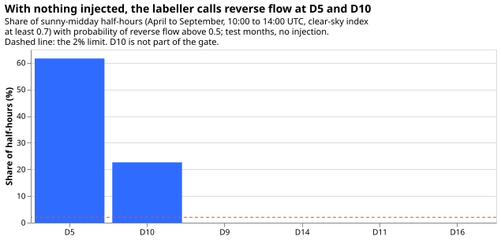

Does a whole-day sign labeller, with separate MW and MVA input channels, improve the export-gated neural network's signed forecast at Primaries where the meter hides the sign?
Take-home: a small neural network that reads one whole day of meter readings and marks each half-hour as reverse flow (power exported up the electricity network) or not ranked those half-hours about as well as the forecast network of experiment 420 (arm A), but no better. It also wrongly marked 61.7% of the sunny midday half-hours at Primary substation D5 as reverse flow when no solar farm had been added, so the forecast-network stage did not run. The result is not supported. The same labeller marked 0% at D9, D11, D14, and D16. Its recall (the share of true reverse-flow half-hours it finds) at a 5% false-reverse rate was 0.22 pooled and 0.52 averaged over Primary-months, against a bar of 0.60 and arm A's 0.21 and 0.46. D5 and D10 have a mean sunny-midday reading of 12 to 16 points of capacity (a point is 1% of the Primary's capacity), against 38 to 53 at the four Primaries the labeller trained on. The difference in demand level is the likely cause; a labeller retrained on a wider mix has not tested it.
This experiment asks whether the export-gated neural network of experiment 420 can be improved where it is weakest. Eight Primary substations report only the size of the power that flows, not its direction (signed power is positive for demand and negative for reverse flow). Experiment 420 hid the direction at six Primaries where it is known, added a real solar farm's recorded output to some of them, and found that a neural network with a Primary-level export gate (arm A) forecast reverse-flow half-hours much better than the same neural network with the gate shut. Arm A has three weaknesses: it finds only 52.4% of reverse-flow half-hours when the injected farm is the size of the Primary's typical sunny midday reading (level 1.0), its lower tail is too narrow (the 1% quantile covers 6.2% of reverse-flow rows), and it calls reverse flow on 66.8% of non-reverse sunny summer middays. This experiment tested one of two planned ideas, a labeller that reads a whole day of readings and gives each half-hour a probability of reverse flow. The second idea, separate input channels for measured MW and for MVA, was not tested.
Terms used below. Level 1.0 and level 2.0 are the size of the injected farm as multiples of
the Primary's typical sunny midday reading. Sunny slice is the half-hours where CAMS solar
output is at least 0.3 of its 99th percentile and the clear-sky index is at least 0.7.
Pooled means all rows together, and macro-averaged means the mean over Primary-months.
Hidden pair is the two signed Primaries whose sign is hidden in a rotation (r1: D5 and D10).
L1 and L2 are the two step 0 gate bars. pi is the labeller's probability of reverse
flow.
Earlier experiments that motivated this one
- The 0.70 area belongs to the hand-made day-flip diagnostic, not to arm A. That diagnostic scored 0.702 in step 0 of experiment 420 and 0.73 in experiment 417. Arm A's own row-level ranking area is 0.930 on the sunny slice at level 2.0. The step 0 bar (an area of 0.85 and a recall of 0.60 at a 5% false-reverse rate) was therefore set against arm A's level-2.0 figures, 0.930 and 0.623, and the result below compares both at level 1.0.
- Experiment 424 found that arm A survives ensemble weather (a gain of 15.7 points over the gate-shut neural network, against 19.2 in the laboratory test). This experiment kept recorded CAMS and ERA5 inputs, so that every contrast is against experiment 420's stored arm A. No ensemble-weather test was run.
- Experiment 422 found that training at several origin hours removes most of the loss from late readings. Only the labeller trained on days cut at a random hour, so it can read a day that ends at the newest usable observation.
- Experiment 417 counted eight earlier treatments of the hidden-sign problem that failed. Its hand-built zero-crossing labeller scored 0.96 on injected against placebo days at level 2.0 and 0.58 at level 1.0, and its hard labels did not lift the fits. The bar here was a probability on every gate-open row, not hard labels.
Design as registered (only step 0 was run)
- Step 0: the labeller (105 fits, no mixture density network). One labeller per rotation, test
month, and left-out visible Primary: five per rotation and month (one trained on the four visible
Primaries, four each leaving one visible Primary out). It reads 48 half-hours of a UTC day:
the reading
r,y' = sqrt(max(r^2 - 4, 0)), CAMSuandk, ERA5 temperature, a demand reference (median reading by half-hour over overcast days of the same 28-day block and day type), the day type, and a mask. It outputs the logit ofP' < 0and an estimate ofP'. The architecture is a width-5 convolution feeding a two-layer bidirectional GRU of 32 units, or a dilated convolution stack of the same width. A pilot on the left-out visible Primaries (rotation r1, test months 2025-09 and 2026-06, level 1.0) picked the one with the higher pooled area. - Training copies. Each visible Primary-day is copied with a solar farm injected at power factor
1, at a level drawn from 0 to 2.5 (15% of copies at 0, the placebo days), with
Qdrawn from 0, 2, and 4 points, capped at 70% of the farm's peak on 30% of copies, and cut at a random hour on 50% of copies. Loss: cross-entropy on the sign (weight 0.25 where|P'| < 2) plus a Huber loss onP'. Every eighth block of seven days is held out for early stopping. - No leakage from the hidden pair. Each rotation injects only the farms that its hidden pair does not use (r1: farms B and D; r2: farms A, C, and D; r3: farms B and D). A leave-one-out labeller also drops the left-out Primary's own farm. The hidden pair's signed truth is used only to score. Farms in one region share a sky, so the exclusion protects less than it appears to.
- Step 0 gate. L1: at level 1.0 on the sunny slice of the hidden pair's test-month rows, the
area is at least 0.85 and no more than 0.05 below arm A's on the identical rows, the recall at a
5% false-reverse rate is at least 0.60 and no more than 0.05 below arm A's, and the expected
calibration error is at most 0.10. L2: with no injection,
pi > 0.5on at most 2% of sunny-midday half-hours at each of D5, D9, D11, D14, and D16. Counts are rows, pooled over rotations and months, with the Primary-month macro-average beside each. - Network stage (planned, not run). The arms were arm A and the plain network (P0, stored),
two refits of A, T (A with two channels and a measured flag), TD (T with pseudo-Primaries and MW
masking), L (A with the labeller's soft labels and probabilities), TDL (all three ideas), and
TDL-perm (TDL with
pipermuted across days). The registered rule runs L, TDL, and TDL-perm only if both gate bars hold.
Pilot choice, written before the 105 labellers ran
On the left-out visible Primaries of rotation r1 (test months 2025-09 and 2026-06, level 1.0, 8 labellers per architecture), the GRU labeller scored an area of 0.945 and a recall of 0.633 at a 5% false-reverse rate; the dilated convolution scored 0.937 and 0.576. The GRU fit takes about 4 seconds, so the GRU is the architecture for the 105 labellers. Both ran all 25 epochs without early stopping, so the labellers may be under-trained; the epoch count was not changed after the pilot.
Step 0 result: the gate failed
All 105 GRU labellers ran (about 4 seconds each). Rows are counted, not unique half-hours. Areas and recalls are on the sunny slice of the hidden pair's test-month rows at level 1.0, with arm A scored on the identical rows. No interval is given: step 0 pools 21 labellers, and the macro-average over Primary-months is the spread measure.

| Measure | Labeller, pooled | Arm A, pooled | Labeller, macro | Arm A, macro |
|---|---|---|---|---|
| Area | 0.887 | 0.880 | 0.897 | 0.880 |
| Recall at 5% false reverse | 0.223 | 0.211 | 0.517 | 0.457 |
| Expected calibration error | 0.072 | 0.050 | 0.108 | 0.095 |
- L1 fails on recall. The area (0.887) passes its bar and is no worse than arm A's. The recall at 5% false reverse is 0.223 pooled and 0.517 macro-averaged, both under the 0.60 bar. The pooled figure is low because pooling Primaries with different base rates sets one threshold for all.
- L2 fails at D5. With nothing injected,
pi > 0.5falls on 64.1% of D5's sunny-midday rows (61.7% of its unique half-hours; the rows repeat each half-hour once per forecast run), and on 0% at D9, D11, D14, and D16 (arm A: 0% at all five). The labeller, trained on D9, D11, D14, and D16, invents reverse flow at D5. - Day-level area: 0.903 for injected against placebo days at level 1.0 (325 and 1,001 days), against 0.702 for the hand-made day-flip diagnostic and 0.58 for the zero-crossing labeller of experiment 417. The labeller reads a whole day better than the hand-made diagnostics, but ranks rows no better than arm A.
- Decision (registered rule): the networks that use the labeller (L, TDL, TDL-perm) did not run. The manager of the experiment queue also decided not to run T, TD, and the two refits of A (128 fits).
Checks
- Median minus mean forecast: not applicable; step 0 fitted no forecast.
- Mean-forecast error beside the quantile score: not applicable, for the same reason.
- Triggers fired: trigger 1 (a placebo control fails: D5 at no injection) and trigger 2 (the result contradicts the prediction that L1 and L2 would pass). An independent audit re-derived every table figure from the stored tables (within 0.005). It found no leakage and no join or window artefact: D5 has no real reverse flow, and its rate is 63.0% in the training window and 61.7% in the test window. Without D5 the pooled recall is 0.656, so D5 causes both failures, but D5 is a hidden test Primary and L2 needs all five.
What the next experiment should answer
Train the sign labeller on a mix of Primaries that spans the demand levels of the hidden ones, and test that against arm A first on D5 and D10 with nothing injected. If that also fails, keep arm A as the candidate and run its ensemble-weather test with the laboratory-trained network applied to ensemble inputs beside the retrained one.